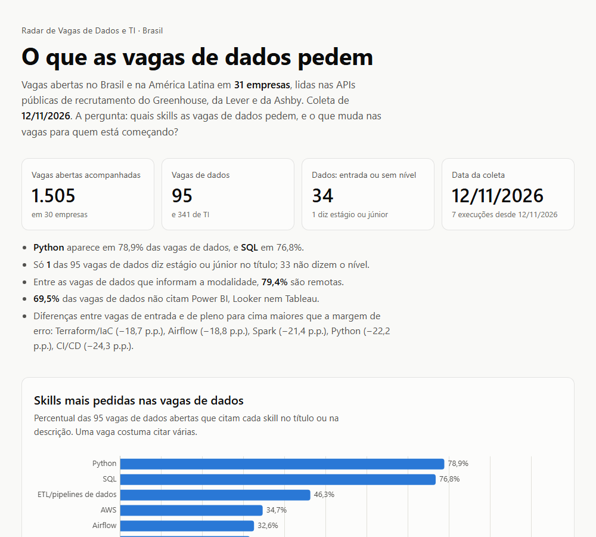

Ao vivo · Cron semanalLive · Weekly Cron
101 pytest + CI
Dados públicos reaisReal Public APIs
Radar de Vagas de Dados e TITech & Data Job Market Radar
Coletor semanal via GitHub Actions consultando APIs públicas (Greenhouse, Lever e Ashby; 31 empresas, ToS e limite de 1 req/s verificados) com UPSERT idempotente em SQLite, 65 skills auditadas, análises em SQL e página Chart.js.
Weekly GitHub Actions collector querying public Greenhouse, Lever, and Ashby APIs (31 companies, ToS & 1 req/s verified) with idempotent SQLite UPSERTs, 65 audited skills, pure SQL analytics, and Chart.js reporting.
16/11/2026: 1.478 vagas ativas BR/LatAm · 91 dados (Python 78,0%, SQL 76,9%)